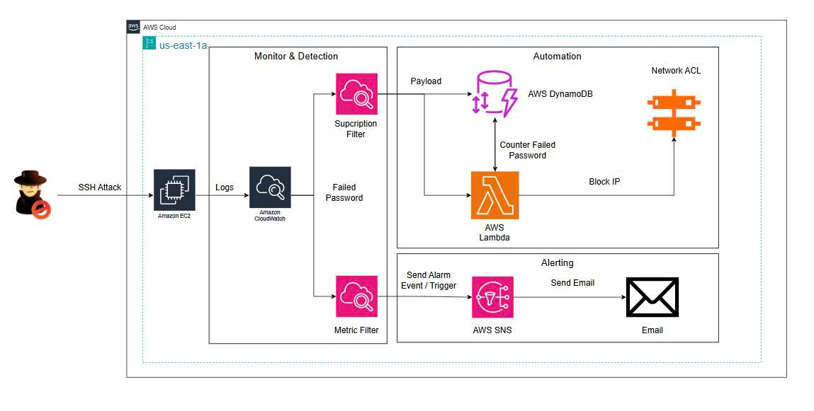

Tổng quan Workshop
Mục tiêu
Workshop này hướng dẫn triển khai giải pháp AWS SSH Automated Threat Protection (Phản ứng và ngăn chặn tấn công tự động) cho máy chủ EC2 Linux trên nền tảng AWS bằng cách sử dụng kiến trúc Cloud-Native Serverless, các dịch vụ an toàn thông tin được quản lý (Managed Services) và quy trình tự động hóa ứng phó sự cố. Sau khi hoàn thành workshop, bạn sẽ có thể xây dựng một hệ thống bảo vệ máy chủ SSH hoàn chỉnh với khả năng tự động thu thập log, đếm tần suất vi phạm, gửi cảnh báo và tạo quy tắc chặn địa chỉ IP vi phạm ở tầng mạng Subnet (Network ACL) mà không cần sự can thiệp thủ công của quản trị viên.
1. Giới thiệu bài toán và giải pháp
Giao thức SSH (Secure Shell) là phương thức phổ biến để quản trị từ xa các máy chủ Linux. Tuy nhiên, việc mở cổng SSH (Port 22) ra Internet khiến các máy chủ EC2 thường xuyên trở thành mục tiêu hàng đầu của các cuộc tấn công dò quét mật khẩu (SSH Brute-force và Password Guessing). Khi xảy ra tấn công, quy trình phản ứng truyền thống đòi hỏi kỹ sư vận hành phải kiểm tra file log thủ công (/var/log/auth.log), trích xuất IP độc hại và thêm quy tắc chặn bằng tay. Quy trình này mất nhiều thời gian, dẫn đến thời gian gián đoạn dịch vụ và nguy cơ máy chủ bị chiếm quyền điều khiển.
Thay vì xử lý thủ công, workshop này áp dụng giải pháp AWS SSH Automated Threat Protection dựa trên kiến trúc Serverless Security trên AWS. Máy chủ Amazon EC2 (Ubuntu Linux) đóng vai trò là hạ tầng dịch vụ cần bảo vệ.
Toàn bộ log đăng nhập hệ thống được CloudWatch Agent đẩy tập trung về Amazon CloudWatch Logs. CloudWatch Subscription Filter sẽ lọc các chuỗi sự kiện Failed password và đẩy dữ liệu trực tiếp sang AWS Lambda. Hàm Lambda giải mã dữ liệu, trích xuất địa chỉ IP nguồn và cập nhật bộ đếm trong Amazon DynamoDB theo cửa sổ thời gian 1 phút. Khi số lần đăng nhập thất bại vượt quá ngưỡng quy định (5 lần/1 phút), hệ thống gửi tin nhắn cảnh báo qua email bằng Amazon SNS và AWS Lambda tự động gọi API tạo quy tắc DENY trên Network ACL (NACL) để chặn vĩnh viễn địa chỉ IP nguồn dạng /32 ngay ở tầng mạng Subnet, loại bỏ hoàn toàn lưu lượng tấn công trước khi nó tiếp cận máy chủ EC2.
2. Kiến trúc hệ thống
Kiến trúc giải pháp AWS SSH Automated Threat Protection được triển khai theo mô hình Serverless trên AWS, được chia thành 3 nhóm chức năng chính:
- Data Collection & Ingestion Layer (Lớp thu thập & Quản lý Log): Bao gồm Amazon EC2 Ubuntu (Máy chủ SSH), CloudWatch Agent (Thu thập
/var/log/auth.log) và CloudWatch Logs Group (Lưu trữ log đăng nhập tập trung).
- Processing & State Management Layer (Lớp xử lý & Quản lý trạng thái): Bao gồm Subscription Filter và Metric filter (Lọc pattern
Failed password), AWS Lambda (Hàm Serverless giải mã, bóc tách IP và gọi API) và Amazon DynamoDB (Lưu giữ bộ đếm số lần thất bại theo IP trong 1 phút).
- Remediation & Perimeter Enforcement Layer (Lớp phản ứng & Ngăn chặn ranh giới): Bao gồm Amazon SNS (Gửi mail cảnh báo sự cố), Network ACL (NACL) thực thi quy tắc
DENY /32 chặn kết nối IP tấn công ở tầng mạng Subnet và AWS IAM Role (Cấp quyền an toàn cho Lambda).
Hình 1 – Kiến trúc hệ thống AWS SSH Automated Threat Protection

3. Quy trình hoạt động của hệ thống
Luồng xử lý chính của hệ thống diễn ra theo 10 bước:
- Kẻ tấn công (Attacker) thực hiện các lượt đăng nhập SSH không hợp lệ vào máy chủ Amazon EC2 Ubuntu.
- SSH Server trên EC2 ghi nhận sự kiện đăng nhập thất bại vào file nhật ký hệ thống
/var/log/auth.log.
- CloudWatch Agent cài trên EC2 tự động đẩy dữ liệu log mới về CloudWatch Logs Group.
- Subscription Filter quét log, phát hiện các chuỗi sự kiện khớp với cấu hình pattern
Failed password và gửi payload sự kiện đến AWS Lambda.
- AWS Lambda giải mã dữ liệu nén, sử dụng biểu thức chính quy (Regex) để bóc tách chính xác địa chỉ IP nguồn (
clientIp).
- Lambda truy vấn và cập nhật tăng bộ đếm số lần đăng nhập thất bại cho địa chỉ IP đó trong bảng Amazon DynamoDB.
- Lambda kiểm tra tổng số lần thất bại trong khoảng thời gian 1 phút gần nhất.
- Nếu số lần thất bại nhỏ hơn 5, Lambda kết thúc lượt xử lý và hệ thống tiếp tục duy trì giám sát.
- Nếu số lần thất bại đạt từ 5 lần/1 phút trở lên, Lambda kích hoạt quy trình phản ứng tự động thông qua Network ACL để chặn ip.
- Kiểm tra Metric filter nếu vượt ngưỡng 5 lần/1 phút sẽ kích hoạt SNS topic để gửi mail cảnh báo.
4. Các dịch vụ được sử dụng
Workshop sử dụng các dịch vụ AWS sau:
Hạ tầng và Lưu trữ Nhật ký
- Amazon EC2: Máy chủ Linux Ubuntu chạy dịch vụ SSH Server.
- Amazon CloudWatch Logs: Thu thập, lưu trữ và quản lý log đăng nhập SSH tập trung.
- CloudWatch Subscription Filter và Metric Filter: Quét và lọc thông tin log sự kiện theo dạng mẫu (Pattern Matching).
Quản lý Trạng thái, Cảnh báo và Tự động hóa
- AWS Lambda: Thực thi mã Python (sử dụng AWS Boto3 SDK) xử lý logic bóc tách IP, kích hoạt cảnh báo và tự động gọi API.
- Amazon DynamoDB: Cơ sở dữ liệu NoSQL lưu trữ bộ đếm số lần thất bại theo IP và cửa sổ thời gian.
- Amazon SNS: Dịch vụ phát tin nhắn cảnh báo tự động qua Email tới quản trị viên.
An ninh và Phân quyền
- Network Access Control List (NACL): Tường lửa stateless ở tầng Subnet thực thi quy tắc
DENY.
- AWS IAM: Quản lý quyền hạn thực thi an toàn giữa các dịch vụ theo nguyên tắc tối thiểu (Least Privilege).
Công cụ kiểm thử
- OpenSSH CLI / Bash Script (Giả lập chuỗi tấn công Brute-force SSH).
5. Kết quả đạt được
Sau khi hoàn thành workshop, bạn sẽ có thể:
- Khởi tạo máy chủ EC2 Ubuntu, cấu hình SSH và cài đặt CloudWatch Agent để đẩy log
/var/log/auth.log tập trung.
- Cấu hình CloudWatch Subscription Filter và Metric Filter với pattern
Failed password để lọc sự kiện đăng nhập thất bại.
- Tạo bảng Amazon DynamoDB để duy trì bộ đếm tần suất truy cập theo IP và khoảng thời gian 1 phút cùng topic Amazon SNS gửi email cảnh báo.
- Lập trình hàm AWS Lambda bằng Python bóc tách IP vi phạm, tương tác với DynamoDB, phát bản tin SNS và gọi API thao tác với Network ACL.
- Phân quyền IAM Role chính xác cho Lambda tương tác an toàn với CloudWatch Logs, DynamoDB, Amazon SNS và EC2 Network ACL.
- Thực thi kịch bản giả lập tấn công SSH Brute-force để xác minh luồng gửi mail cảnh báo từ Amazon SNS và tự động thêm quy tắc
DENY /32 trên Network ACL.
- Thực hiện quy trình dọn dẹp tài nguyên an toàn sau khi hoàn thành workshop để tránh phát sinh chi phí duy trì.